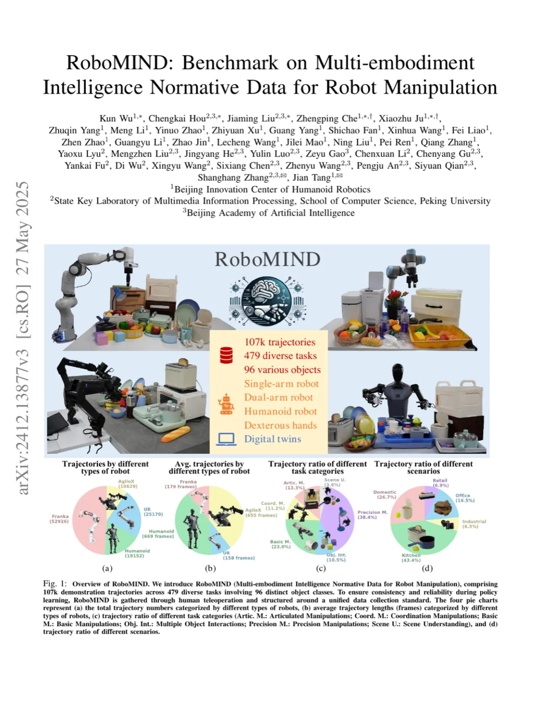
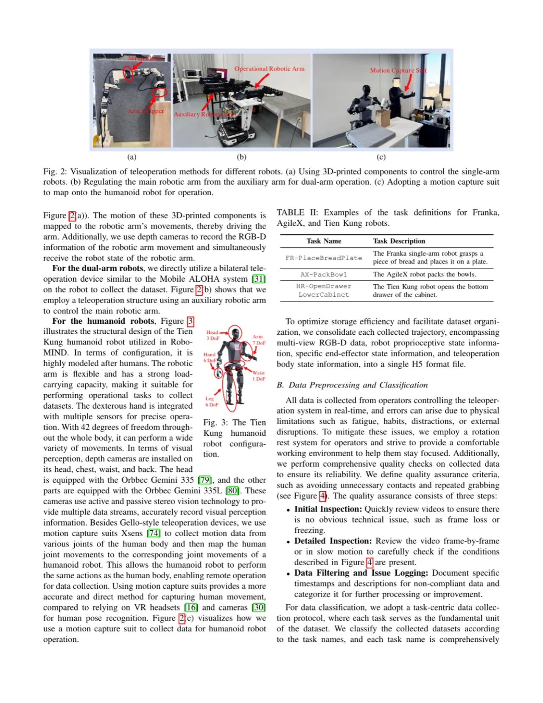
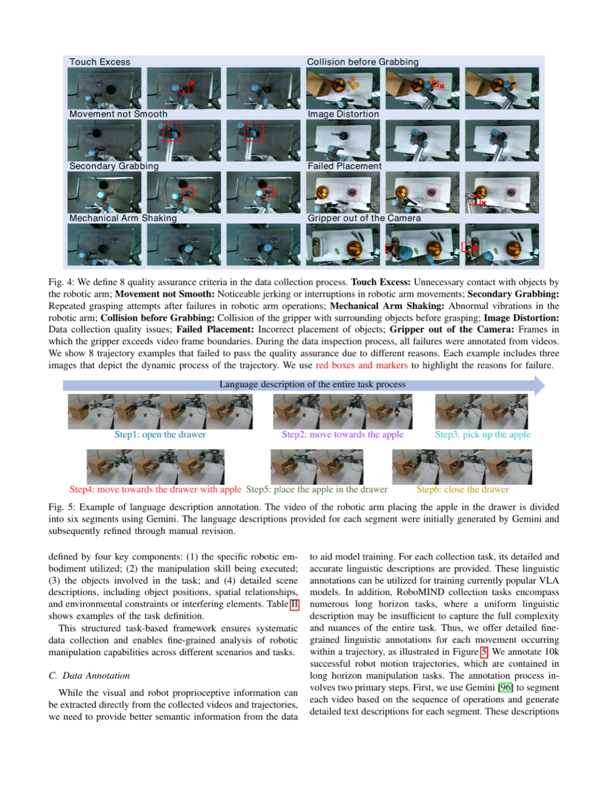
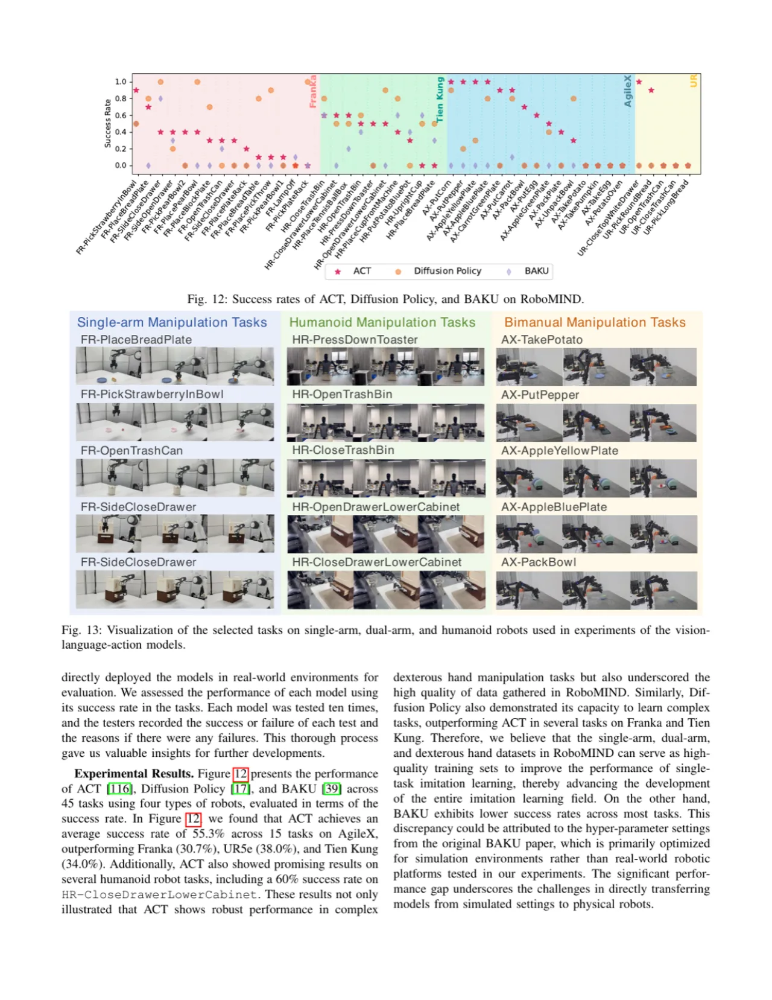
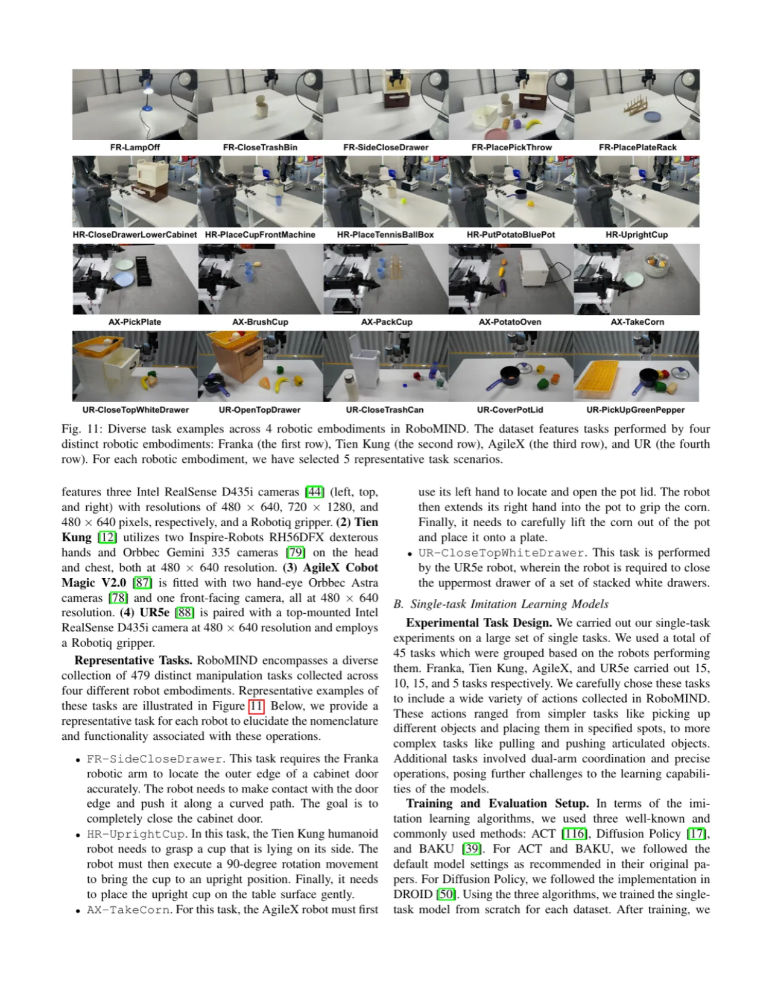

RoboMIND（Multi-embodiment Intelligence Normative Data）是一个包含 107k 条示范轨迹、479 种任务、96 类物体的大规模机器人操作数据集，覆盖单臂、双臂、人形及桌面四类机器人，并引入统一数据采集标准、5k 条真实失败轨迹，以及 Isaac Sim 数字孪生环境，为通用操作策略研究提供坚实基础。
通用机器人操作策略的训练需要大量多样化、高质量的示范数据。然而现有数据集普遍存在规模有限、机体单一、采集标准不统一等问题，严重制约了策略的泛化能力。
"Unlike language or vision datasets that can often be sourced through web-based collection methods, collecting robotic data is difficult because each robot requires controlled environments where the joints and end-effector information of robotic systems are meticulously recorded."
此前大多数工作仅专注于单一机器人类型（如 Open X-Embodiment 以单臂为主），任务多样性和跨机体迁移能力严重受限。RoboMIND 提出了一套统一数据采集与标注流程，汇聚 4 类机体的真实遥操作数据，并额外收录失败案例和仿真数字孪生，以满足当代大模型训练的数据需求。

与现有工作相比，RoboMIND 的优势体现在：(1) 覆盖的任务和机体类型最多；(2) 采集标准统一，数据质量可控；(3) 提供失败轨迹以支持 Reinforcement Learning from Human Feedback (RLHF) 类研究；(4) 提供 Isaac Sim 数字孪生环境，支持合成数据生成与策略评测。论文 Table I 与 Open X-Embodiment、BridgeData V2、RoboSet、DROID 等代表性数据集进行了详细对比。
RoboMIND 的核心贡献是一套端到端的数据采集、处理与标注流程，以及配套的数字孪生评测环境，确保跨机体数据的一致性与可用性。

所有数据均通过人工遥操作采集，遵循统一的 H5 格式存储：每条轨迹包含多视角 RGB-D 图像、本体感知机器人状态（关节角度、末端执行器位姿）和自然语言任务描述。四类机体使用各自定制化的遥操作装置：Franka 使用 3D 打印主臂（39.2% 轨迹总量），Tien Kung 使用动捕套装（15,187 条），AgileX 使用双侧主臂（25,170 条），URS 使用仿真（500 条）。
采集后的数据经过三阶段质检：(1) 快速检视——确认无明显技术问题（帧丢失、冻结）；(2) 详细检视——逐帧回放确认操作质量；(3) 类别标注——在时间戳上标注不合规数据并分类原因。论文定义了 8 类质量缺陷（如 Touch Excess、Movement not Smooth、Collision before Grabbing、Image Distortion 等），所有不合格片段均标注上下文和原因供后续分析。

所有任务按语义分为 6 大类：Articulated Manipulations（Artic. M.）（如开关抽屉）、Coordination Manipulations（Coord. M.）（双臂协调）、Basic Manipulations（Basic M.）（抓放）、Multiple Object Interactions（Obj. Int.）、Precision Manipulations（M. Precision）、Scene Understandings（Scene U.）。每条轨迹都配备由 Gemini 初步生成、人工精修的分步式语言描述，精确描述每个动作段落。
论文同步构建了 Isaac Sim 仿真数字孪生，复现真实机器人平台的外观、动力学及相机配置，支持合成数据生成（500 条 URS 仿真轨迹）和策略在仿真中的系统性评测，降低真实环境部署成本。
论文通过两大实验系列验证 RoboMIND 的价值：(1) 在单任务模仿学习算法上的 benchmark 评测；(2) 将 RoboMIND 用于微调大型 VLA 模型的泛化性验证。共选取 45 项任务（含单臂、双臂、人形）进行真实机器人测试，每项任务运行 10 次取成功率。
在 RoboMIND 上评测了三种算法：
每类算法在各机体上的 15 个任务进行测试，评估指标为任务成功率（success rate）。结果显示 ACT 在大多数任务上表现最优，平均成功率达 55.3%（跨 45 任务）。

| 任务类别 | ACT（成功率） | Diffusion Policy | BAKU |
|---|---|---|---|
| Franka 单臂（15 tasks） | ~55%（多任务均值） | ~38% | ~40% |
| Tien Kung 人形（15 tasks） | ~60%（多任务均值） | — | — |
| AgileX 双臂（15 tasks） | 多任务优势明显 | 部分超越 | 较弱 |
注：上表数值为论文 Fig. 12 可视化图中读取的近似值。精确的逐任务成功率请参见原文 Table IV–VI。
论文选取三种 VLA 大模型：OpenVLA、RDT-1B、CrossFormer，分别在 RoboMIND 全量数据上微调，并在 Franka 单臂的 45 个任务上测试成功率。

实验结论（论文 Table IV–VI）：
对 ACT 在 45 项任务的失败进行分类（论文 Fig. 15），最常见的前 5 类失败原因包括：Inaccurate Positioning（~48%，人形机体最高）、Early Release、Cannot Close Gripper、Object Drop、Cannot Return to Home Pose。失败案例分析数据有助于指导后续数据采集和策略改进方向。
尽管提供了 Isaac Sim 数字孪生，仿真与真实机器人之间的物理差距依然存在。论文实验表明，单纯依赖仿真数据训练的策略在真实环境中表现明显下降，仍需与真实数据联合训练。（stated by authors）
Tien Kung 人形机器人仅贡献 15,187 条轨迹，远少于 Franka 的 56,854 条，且任务种类相对受限（主要为双臂协调和长时程操作）。人形机体的数据规模制约了大模型在人形操作上的微调效果。（stated by authors）
分步语言描述由 Gemini 初步生成后经人工校验，但自动化标注流程难以完全规避细节错误（如步骤分界不准确、动作描述粒度不一致）。这可能影响依赖语言条件的 VLA 模型的训练效果。（inferred from design）
当前评测以二值成功率（0/1）为主要指标，未能精细度量策略的中间步骤完成质量（如抓握稳定性、路径平滑度）。更细粒度的评测指标有助于更准确反映策略能力。（inferred from design）
论文泛化测试（未见物体和背景）中，ACT 的平均成功率在 ~40–48% 区间，说明当前数据规模和多样性仍不足以支撑高泛化能力的操作策略。（stated by authors in analysis）